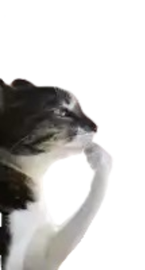
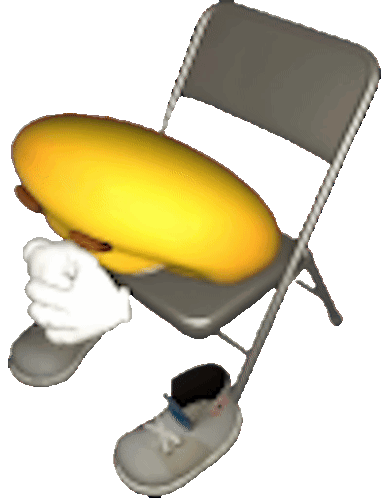
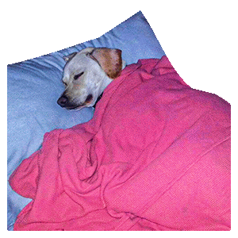
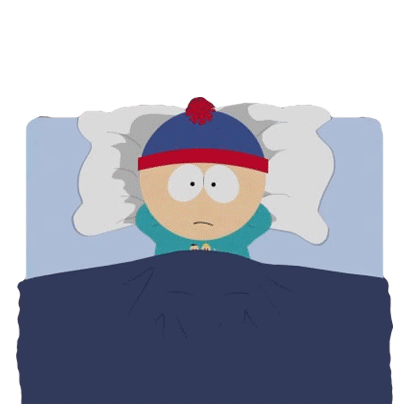

Ser o no ser... esa es la cuestión...—Hamlet
Uno de los primeros dilemas que tuve fue el de la ironía. Voy a hablar largo y tendido, ya que tengo guardadas como dos hojas escritas acerca de eso y ha llegado la hora de que me vuelvan a ser útiles —muajajaja, ya estoy añorando el verano—. Bueno, let’s goooh...
Desde finales del año pasado llevo queriendo tomar unas vacaciones en el cerro, con el motivo de tener unos días de paz mental.
Llegó diciembre y fijé un objetivo:
—Debía largarme como fuera en Semana Santa.

Me repetía muchas veces que lo haría, hacía declaraciones en voz alta: —Sí, hablo sola, ¿quién no lo hace?—, incluso llegué a comentarlo múltiples veces a varias personas.
Entonces… llegó la fecha que tanto esperaba; no quería que nada dañara mis planes, tanto así que declaré que, así fuese caminando, me iba de aquí.
El viaje no se canceló, pero lo dejaron para los últimos días, algo que, sinceramente, no me convenció, así que decidí quedarme en mi casa.

Así pasaron los días, y yo no hice muchas cosas productivas para la sociedad y mi familia; como siempre, me la pasaba recostada en mi cama o simplemente existiendo. Cuando me despertaba en la tarde, me quedaba pensando en miles de escenarios: apocalipsis zombies, pulgas, evolución de la Tierra, el pensamiento humano, si todo esto es una alucinación provocada por sustancias ilícitas y mi verdadero yo está en una cápsula de experimentación en una nave espacial de camino a otra galaxia, y todo tipo de futuros cercanos o distantes.
